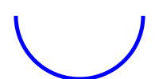

Беднов Г.А.
Это значит “взвесить” число на “весах”!
с одной стороны весов: груз
с другой стороны - гирьки 1, 2, 4, 8, …,
“1” положить гирьку, а “0” — убрать;
основание: 3
цифры: -1, 0, +1
примеры: ++ (), +- (), -+ ()
для симм. систем счисления “гирьки” на весах можно класть на ту же чашу, что и сам груз;
минимальная доступная симметричная позиционная система счисления
Число :
 |
|
|
|
|
|
| Двоичная | Троичная симм. |
|---|---|
| напряжение | ток? момент? |
| привычна | инопланетянин |
| экономна | в теории, производительная |
| минимальная | минимальная симметричная |
| О.К., П.К., Д.К. | нативная поддержка минуса |
unsigned-типы в C++ (unsigned int, unsigned char, unsigned long int, …);
все биты — под двоичные цифры;
диапазон от 0 до ;
за 255 следует… снова 0 (цикличность значений)
на примере ячейки 1 байт
1111.1111
0000.0001
------------
(1)0000.0000255 + 1 = 0 (CF=1)
Когда емкость ячейки исчерпана - нужно сделать “перенос” в/из ячейки старше,
включается CF=1
Как вообще кодировать знак числа, если доступны только цифры?
Как отдельно учесть что мы в ячейке?
прямой код
появился первым
первый бит инвертируется, остальные как были
понятен, но неудобен для схемотехники
устарел, кроме как для кодирования дробных (см.дальше)
обратный код
инвертируются все биты
универсальнее чем прямой, но тоже устарел
обычно не используется совсем
дополнительный код
обратный код + 1
цикличен; что сложить 2+(-3), что вычесть 2-3
доминирует при кодировании целых чисел со знаком
7+1 = 0111 + 0001 = 1000
для ниббла в доп.коде
Математический блокбастер
“7 + 1 = -8”
от создателей 127 + 1 = -128 (для байта)
Можно обойтись без них:
Когда надо:
float, double, long double из C++
Number из JavaScript
один бит - на знак
один байт - на порядок
остальное - на мантиссу
| обозначение | имя | варианты обозначений |
|---|---|---|
| НЕ | a’, ¬a | |
| И | ab, | |
| ИЛИ | a+b |
Считаем что есть высказывания
Они истинны или ложны
Наша задача - узнать истину
Давайте посчитаем!
Ограничим алгебру сложением и умножением двух чисел
Первоначально, Буль сделал “сложение” как исключающее ИЛИ:
Но…
заменив все
получите то же самое выражение! (дуальность)
Из-за этого булева Алгебра “симметрична”
А что если смысл не в высказываниях, а в признаках?
пусть X - это определение, разделяющее все предметы в мире на x и x’
в таком случае, конъюнкция — это создание более строгого определения из двух других
а дизъюнкция — менее строгого
Пусть вкусное (В), полезное (П)
— чем питается человек
- то, чем человек не питается
По закону де Моргана,
Значит, невкусное и неполезное есть человек не захочет точно.
“Не бывает X без Y”
Вместе с условием сосуществования противоположностей составляет основу отношения следования
Можно дедуктивно решать задачи!